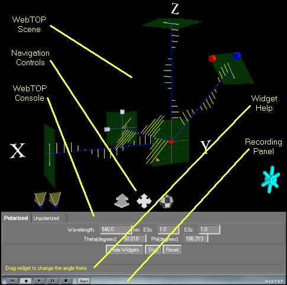
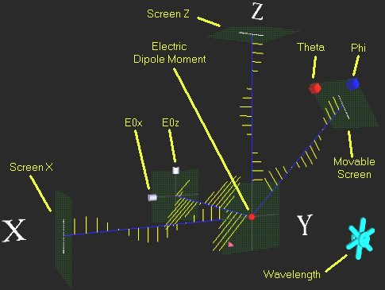
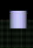
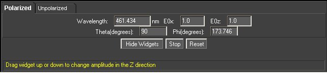
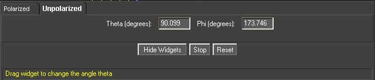

Scattering : Directions
Under normal operation, your WebTOP window should look like the following:

The WebTOP window has four parts. The top portion is the active WebTOP scene.
The second portion is the VRML Navigation controls.
The third portion, the console, contains a message line that provides help on the operation of the Widgets and keyboard entry boxes.
The fourth portion is the recording panel that allows you to record and replay WebTOP sessions. You may scroll down to read on, or
select the appropriate link from the following items:
How To Change
Parameters
During normal operation of the module, you should see a figure similar to this:

In this module you can change the properties of light incident on an
electrical dipole moment and observe the scattered light . The parameters that you can change
are the wavelength of the incident light, and the magnitudes of the x and y components of
its electric field
(E0x and E0z), and the
position of the movable screen (theta and Phi.) These parameters can
be changed by manipulating the widgets in the scene or by using the
WebTOP Console.
This module includes five widgets: two are cubes, one is a wheel, and the
last two are slider widgets.
| |
|
 |
| Cube Widgets |
Wheel Widget |
Slider Widget |
To change a parameter, you need to position your cursor over the proper
widget. Labels on the module figure, shown above, identify the function of
each of the widgets. Once you have placed the cursor over the widget, the cursor changes shape. If you click on the left mouse button, a message explaining the operation
of the widget appears at the help portion of the WebTOP console.
Note that the wave becomes static when the widget is engaged. The animation is restored after you release the widget. Note also that
while changing a parameter with a widget, the corresponding value is updated in the corresponding
keyboard entry box.
Changing a Parameter with the Cube Widget:
This widget can be used to change the orientation of the movable
screen. The red cube changes theta and the blue cube changes phi. Just grab
the cube and drag it along the direction of increase/decrease of the angle.
Changing a Parameter with the Wheel Widget:
Once you select the wheel, drag and rotate the cursor to the left if you want to
decrease the wavelength or the right if you want to increase it. Note that the
color of the wave is not representative of the wavelength of the light used. You may need to repeat dragging in the same
direction until you obtain the desired wavelength.
Changing a Parameter with the Slider Widget:
The slider can be used to change E0x or E0z. Select the desired
slider and move it along the axis until you obtain the desired value.
Changing Parameter With the WebTOP Console:
The Controls and Parameters Panel provides two interfaces one for
polarized light and one for unpolarized light. You might switch between the
interface by clicking on the appropriate Tab. In either interface, you may change the parameters by typing the values in the "Keyboard
Entry Boxes" then pressing the "Enter" key. You may
hide all widgets and display them again by using the Hide
Widgets/Show Widgets button. The Stop/Play
button allows you stop and restart the simulation. It is
recommended that you Stop the simulation before exiting or moving to
another page.
The following figures show different setting of the WebTOP Console:
|  |
| WebTOP Console: Polarized light is
selected. |
|
 |
| WebTOP Console: Unpolarized light is
selected. |
|